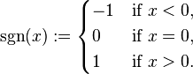

@(开发错误收集)
#收集Android错误
[TOC]
##字体大小不随系统改变
微信Android中是如何做到字体大小不随系统设置而改变的，扩展一点，安卓 App中的字体如何独立于系统的设置?
##编译出错peer not authenticated
- build时出现以下错误
Cause: peer not authenticated
通常情况下这是HTTPS下载时认证不通过造成的。这时可看出现问题的链接是什么，如果是下载gradle插件自身，则可以找到gradle/wrapper/gradle-wrapper.properties 这个文件。
把文件中的istributionUrl从Https改为http
如果是下载其载依赖库造成的，如果是采用jcenter, 则可以用以下代码代替。
jcenter {
url “http://jcenter.bintray.com/“
}
##Android获取字体高度和设置行高
网络中好多资料介绍获取字体高度的方法如下：
个人更倾向于以下方式获取字体实际高度：
通过实际的截图对文字高度的确定，后者更准确一些。
有了字体高度信息，就可以添加行与行之间的空隙，调整行高。
个人实现方式如下：
实践验证这种方式对多种分辨率的屏幕的适应性较强。
以上是个人在实际的功能实现过程中的总结，水平较浅，若看官有不同的看法或者见解，望不惜赐教！
##android 获取字符串的高度和宽度
计算出当前绘制出来的字符串有多宽，可以这么来！
方法1：
Paint pFont = new Paint();
Rect rect = new Rect();
//返回包围整个字符串的最小的一个Rect区域
pFont.getTextBounds(str, 0, 1, rect);
strwid = rect.width();
strhei = rect.height();
方法2：
//直接返回参数字符串所占用的宽度
strwid = paintHead.measureText(str);
##Gradle的执行顺序
问题1
gradle的解析顺序：rootproject 的setting.gradle,然后是rootproject的build.gradle,然后是各个subproject。所以project下的build.gradle会先于app下的build.gradle。
问题2
在build.gradle中，我们可以通过apply plugin: 引入插件，也可以通过 apply from .gradle引入其他gradle脚本中的函数定义或task等
问题3
你说的check，clean实际是task，一般hook我们指的是gradle的生命周期：
在解析setting.gradle之后，开始解析build.gradle之前，这里如果要干些事情（更改build.gradle校本内容），可以写在beforeEvaluate
举个例子，我们将我们的一个subproject中的apply plugin改掉，原来是一个library工程，我们希望它被当作application处理：
在所有build.gradle解析完成后，开始执行task之前，此时所有的脚本已经解析完成，task，plugins等所有信息可以获取，task的依赖关系也已经生成，如果此时需要做一些事情，可以写在afterEvaluate
project.afterEvaluate {
// Set application id
def manifest = new XmlParser().parse(project.android.sourceSets.main.manifestFile)
project.android.defaultConfig.applicationId = manifest.@package
}
每个task都可以定义doFirst，doLast，用于定义在此task执行之前或之后执行的代码
project.assemble.doLast {
println “assemble finish”
}
project.assemble.doFirst {
println “assemble start”
}
问题4
gradle基于的语言是groovy，也是一个编程框架：
官方文档：https://docs.gradle.org/current/dsl/
Android插件文档：https://github.com/google/android-gradle…
最后你应该从编程的角度来看gradle，通过查阅文档解决问题：http://m.blog.csdn.net/article/details?i…
##使用了系统的AlertDialog导致的一个问题
错误：http://stackoverflow.com/questions/21814825/you-need-to-use-a-theme-appcompat-theme-or-descendant-with-this-activity
使用了系统的AlertDialog导致的一个问题
The reason you are having this problem is because the activity you are trying to apply the dialog theme to is extending ActionBarActivity which requires the AppCompat theme to be applied.
Change the Java inheritance from ActionBarActivity to Activity and leave the dialog theme in the manifest as it is.
##多个类定义attr属性重复的问题:Attribute ＂xxx＂ has already been defined
有时候做自定义控件时就会遇到命名冲突，改变有冲突的名字自然是最直接有效的方式，但是感觉很傻。我搜了下别人的解决方案，觉得很值得借鉴。就是把重名的属性，独立出来写一下，然后在定义时直接写属性名字即可。
比如：下面两个declare-styleable中icon重名了，我们就需要将icon独立出来写。
icon独立定义，就可以被多次引用了。
##计算Adapter中getView的View高度必须由LinearLayout组成
Adapter中getView方法返回的View的必须由LinearLayout组成，因为只有LinearLayout才有measure()方法，如果使用其他的布局如RelativeLayout，在调用listItem.measure(0,0);时就会抛异常，因为除LinearLayout外的其他布局的这个方法就是直接抛异常的，没理由…。我最初使用的就是这个方法，但是因为子控件的顶层布局是RelativeLayout，所以一直报错，不得不放弃这个方法。
##Android Studio集成crashlytics后无法编译的问题
问题描述：
在用fabric集成后编译出现如下错误，
Error:Cause: hostname in certificate didn’t match:
build.gradle部分脚本（fabric插件自动生成的）:
仔细看了一下那个https://maven.fabric.io/public网站的证书(如下图)，证书里指定的网站是*.motili.com，显然错了，不知道这个插件是怎么生成的。

studio在请求https://maven.fabric.io/public无法完成证书校验，所以直接报错，而且在settings把https证书验证去掉也不行。
然后给support发邮件问原因，3天后才给回复，回复内容如下：
Hey there,
Are you by any chance connecting through a proxy server, or are you behind a firewall?
Cheers,
Bear
Helpful? Click to give Bear Douglas thanks!
没有实际内容，是support反应太慢，还是support根本就已经不重视这块crashlytics了。
问题原因：
https://maven.fabric.io/public 无法访问（证书不匹配)，那么其实只要把这个网址换掉即可，后面找到了可以换成:
https://twittersdk.artifactoryonline.com/twittersdk/public
build.gradle直接替换即可，改成：
|
|
另外个人使用crashlytics的一些感受：
- fabric.io界面，crash分析功能比较全，可惜没有ANR/卡顿的检测，这块有点弱。
2.虽然有studio插件，但是studio集成速度太慢了，国外的网站还经常上不去，反正那个插件点按钮半天没反应
3.gradle编译连接下载aar库时也是非常慢，要有耐心
4.登陆fabric.io查看数据有时候也很卡，反应太慢，对于要快点进去查看数据的开发者相当不友好
5.界面排版有点太杂了，很多时候让用户不知所措，不知道点哪里。
- 收集到一些crash不知为何是乱码的，看不到原始数据
##android/ios调用微信分享出现由于hit push hold 无法分享到微信
你分享的微信账号在其他手机登陆了，但是本机还没有退出登陆。
导致没有权限分享。重新进入微信并登陆就好了。
简单的说：重新登录微信
##The number of method references in a .dex file cannot exceed 64K.
Error:The number of method references in a .dex file cannot exceed 64K.
Learn how to resolve this issue at https://developer.android.com/tools/building/multidex.html
##使用FragmentTransaction执行多事务的坑记录
使用FragmentTransaction执行多事务的时候，比如：
发现并没有remove掉之前的fragment，不知道为什么。
据说是mTransaction.remove(mFragmentLogin)会返回一个FragmentTransaction重新给mTransaction赋值，然后再add可以
所以，如果遇到上面的需求，其实直接用replace就可以，没必要手动remove然后再add。
关于cannot perform this action after onsaveinstancestate的解决办法
如何避免
1 在activity生命周期方法内使用FragmentTransaction#commit()应谨慎
多数的应用会在onCreate()中使用该方法，所以不会遇到这样的问题，但如果在onActivityResult(), onStart()或onResume()中使用时就有可能遇到了。那么如果因为一些原因一定要在这些方法中使用FragmentTransaction#commit()该怎么办呢（比如说从下一个页面回来时需要刷新界面的时候）。这时最好在FragmentActivity#onResumeFragments()或者Activity#onPostResume()中使用。这两个方法会保证在activity恢复到最初状态后被调用。
2 commitAllowingStateLoss()只能当做最后的手段
commit和commitAllowingStateLoss()之间的唯一区别是如果状态丢失后者仅仅是不抛出异常而已。一般情况下你不会想用这个方法因为它仍然会有状态丢失的可能。
由于在百度上看到多数的解决办法是使用commitAllowingStateLoss()，并非说这个办法不行，而是尽量精益求精，找到问题的本质所在。翻译有出入 ，请尽量看原文。
详细的信息请参考原作者文章：http://www.androiddesignpatterns.com/2013/08/fragment-transaction-commit-state-loss.html
PS：挖坟，顺便告知后来者，如果在onActivityResult(), onStart()或onResume()中必须调用，可以在activity.runOnUiThread或者view.post里面调用需要的方法，就可以避免这个问题
##EditText clearFocus 光标还在
使用EditText clearFocus 光标依然在EditText上，需要在它的parent Layout 设置
android:focusable=”true”
android:focusableInTouchMode=”true”
这样clearFocus就可以把光标消失掉。
###如何实现EditText 的 ellipse 起作用
如何实现EditText 的 ellipse 起作用，看过很多的文章，也看过别人的实现。但是都不如意，以下是我的几种实现方式的探索：
实现之前请先设置相关参数，例如：setEllipsize(TextUtils.TruncateAt.END);setSingleLine();setLines(1);
首先最简单的设置，在xml 中设置editorable = false，enable = false，就可以现实ellipse 中的…的效果，但是如果想在代码中动态设置editorable这个属性，很抱歉，这个属性没有对外开放，不能动态设置。
开始正题，BufferType 用于标识当前的是否可编辑的属性，在Edittext中
android EditText 怎样使ellipse 起作用
已经严格控制了这个输入类型的设置。所以从这个方向暂时行不通，但是查到一个非常关键的方法
android EditText 怎样使ellipse 起作用
这个方法用于创建当前的编辑器，什么时候会忽略这个编辑器的创建，并且对外开放呢？ 答案是：setKeyListener，所以正确的设置方法为：
setEllipsize(TextUtils.TruncateAt.END);
setSingleLine();
setLines(1);
setKeyListener(null);
既然可以设置成ellipse效果，那肯定可以还原原来的效果，
setKeyListener(new BaseKeyListener() {
@Override
public int getInputType() {
// 返回当前的输入法
return inputType;
}
})
这里面还有一个坑就是，在你切换这两种显示的时候，一定要从新调用 setText()方法.
以上就是android EditText 怎样使ellipse 起作用的全文介绍,希望对您学习Android应用开发有所帮助.
##自定义ExpandableFlowLayout嵌入在ListView中复用问题

在项目开发中，需要折叠展开tag，并且该组件嵌入到listview中，考虑到复用性能的问题。
一、自定义控件，实现乱排版效果
使用开源的FlowLayout，但是需要自己添加折叠收起的功能。
第一反应，重写FlowLayout，为了遵循开闭原则，继承FlowLayout重新定义一个ExpandableFlowLayout。
看了FlowLayout的源码是实现了onMeasure计算子view的高宽和需要layout排版的left和top的值；
然后再实现onlayout实现对子view的排版；
所以要实现折叠展开可以使用requestLayout实现。会导致onMeasure和onLayout重新执行。
二、考虑嵌入ListView中复用的问题
使用了HolderView，在内部保存了一个view的列表，然后实现相关逻辑。
如果不够inflater出来，够了从缓存的view列表中get出来然后重新设置值。
三、实现FlowLayout自定义折叠展开控件的实现bug问题
实现了嵌入ListView复用问题，控件提供折叠展开功能，在onMeasure方法中
刚开始并没有让隐藏的，不需要显示的childView进行measure，
但是发现listview复用的时候会出现，展开的时候，展开的子view会复用getView里的其它子view的width，导致宽度不对。也是一个很经典的问题，很难发现bug原因
##Android Toast having Icon
http://stackoverflow.com/questions/36768679/android-toast-having-icon
In my app I am showing a toast message. But in One Plus One device it shows an icon on left top corner(as shown in attached image).
Can any body help me how can I remove it ?
http://i.stack.imgur.com/nknIE.png
This is a feature of Cyanogen OS/Cyanogenmod. You can not change this behaviour inside your app. Cyanogenmod will always show the App-Icon in this location. The only possible solution would be to provide a fully transparent App-Icon, this would result in your app having no icon at all.
##关于java.lang.OutOfMemoryError的解决方案
【 崩溃类型 】
java.lang.OutOfMemoryError
【 异常描述 】
bitmap size exceeds VM budget
【 出错堆栈 】
com.example.outofmemorytest E/AndroidRuntime: FATAL EXCEPTION: main
java.lang.OutOfMemoryError
at android.graphics.BitmapFactory.nativeDecodeAsset(Native Method)
at android.graphics.BitmapFactory.decodeStream(BitmapFactory.java:503)
at android.graphics.BitmapFactory.decodeStream(BitmapFactory.java:603)
at com.example.outofmemorytest.MainActivity$1.(MainActivity.java:78)
at android.view.View.performClick(View.java:4240)
at android.view.View$PerformClick.run(View.java:17721)
at android.os.Handler.handleCallback(Handler.java:730)
at android.os.Handler.dispatchMessage(Handler.java:92)
at android.os.Looper.loop(Looper.java:137)
at android.app.ActivityThread.main(ActivityThread.java:5103)
at java.lang.reflect.Method.invokeNative(Native Method)
at java.lang.reflect.Method.invoke(Method.java:525)
at com.android.internal.os.ZygoteInit$MethodAndArgsCaller.run(ZygoteInit.java:737)
at com.android.internal.os.ZygoteInit.main(ZygoteInit.java:553)
at dalvik.system.NativeStart.main(Native Method)
【 解决方案 】
OOM的常见异常错误提示有：
1. java.lang.OutOfMemoryError: bitmap size exceeds VM budget
2. java.lang.OutOfMemoryError: Java heap space
3. Root cause of ServletException java.lang.OutOfMemoryError
4. java.lang.OutOfMemoryError
根据导致OutOfMemoryError异常的常见原因进行分类：
1. 内存中加载的数据太大导致内存不足，如一次从数据库取出过多数据、加载的图片过大；
2. 内存泄露堆积导致内存溢出；
3. 启动参数内存值设定的过小；
针对上面的不同情况，分析如下：
一、内存中加载的数据量过大
最常见的就是android图片加载时内存溢出错误。 例如，如下代码：
Bitmap bmp = BitmapFactory.decodeFile(pePicFile.getAbsolutePath() + “/“+info.getImage());
或者 image =BitmapFactory.decodeStream(assetManager.open(imgFilename));
上面代码常用于读取和加载图片文件，当文件较小时，程序能够正常运行，但是当选择一张大图时，程序就会抛出OOM异常错误。
对于该问题，解决方案如下：
1. 你可以通过修改图片的颜色模式（Color schema)来减少创建图片使用的内存量
2. 你也可以通过加载一个缩放之后的图片，来减少创建图片时的内存分配量，但是需要注意图片缩放后可能会损失质量
3. 你可以根据用户手机屏幕的大小来计算图片的尺寸，并且时刻注意图片处理后进行内存回收。
二、内存泄露
一些对象有着有限的生命周期。当这些对象所要做的事情完成了，我们希望他们会被回收掉。但是如果由于设计不合理，当程序结束时它却没有被释放而继续占用内存，这就造成了内存泄露。持续累加，内存很快被耗尽。而当内存耗尽时，则会产生内存溢出错误。
常见的内存泄露产生原因及解决方案如下：
1. 频繁的使用static关键字修饰
由于static声明变量的生命周期其实是和APP的生命周期一样的（进程级别）。大量的使用的话，就会占据内存空间不释放，积少成多也会造成内存的不断开销。
static的合理使用一般用来修饰基本数据类型或者轻量级对象，尽量避免修复集合或者大对象，常用作修饰全局配置项、工具类方法、内部类。
2. 页面背景图
背景与图片引用导致的内存泄露。
在布局和代码中设置背景和图片的时候，如果是纯色，尽量使用color。如果是规则图形，尽量使用shape画图。如果稍微复杂点，可以使用9patch图。如果不能使用9patch的情况下，针对几种主流分辨率的机型进行切图。
3. View缓存
重复生成View。
在ListView和GridView中，列表中的很多项(convertView)是可以重用的，不需要每次getView就重新生成一项。
4. 引用滥用
滥用Activity引用对象。
Activity中生成的对象原则上是应该在Activity生命周期结束之后就释放的。Activity对象本身也是，所以应该尽量避免有appliction进程级别的对象来引用Activity级别的对象，如果有的话也应该在Activity结束的时候解引用。如不应用applicationContext在Activity中获取资源。
5. BroadCastReceiver、Service 绑定
未解绑。
绑定广播和服务，一定要记得在不需要的时候给解绑。
6. handler 引用
未清除Handler引用。
在Activity的onDestroy方法中调用handler.removeCallbacksAndMessages(null);取消所有的消息的处理，包括待处理的消息。
7. 数据库Cursor引用
Cursor未及时关闭。
在查询SQLite数据库时，会返回一个Cursor，当查询完毕后，及时关闭，这样就可以把查询的结果集及时给回收掉。
8. 线程
线程开启过多或未及时关闭。
线程不再需要继续执行的时候要记得及时关闭，开启线程数量不易过多，一般和自己机器内核数一样最好，推荐开启线程的时候，使用线程池。
##Caused by: java.lang.IllegalArgumentException: Comparison method violates its general contract!
Caused by: java.lang.IllegalArgumentException: Comparison method violates its general contract!
问题
导致该异常的原因有以下两点构成：1.使用了jdk7 2.使用了比较器，并且比较器违反了比较规则
以下是关于比较器不兼容的声明：
|
|
描述的意思是说，java.util.Arrays.sort(java.util.Collections.sort调用的也是此方法)方法中的排序算法在JDK7中已经被替换了。如果违法了比较的约束新的排序算法也许会抛出llegalArgumentException异常。JDK6中的实现则忽略了这种情况。那么比较的约束是什么呢？看这里，大体如下：

当x == y时，sgn(compare(x, y)) = -1，-sgn(compare(y, x)) = 1，这违背了sgn(compare(x, y)) == -sgn(compare(y, x))约束，所以在JDK7中抛出了本文标题的异常。
解决方式
1.JVM加入如下参数-Djava.util.Arrays.useLegacyMergeSort=true，表示使用JDK6的排序算法
2.按照规定的比较规则进行值的返回，a==b 返回 0，ab 返回 1
参考
http://blog.2baxb.me/archives/993
##关于Universal-Image-Loader加载同一张图只成功一张的问题
ImageLoader#loadImage(Java.lang.String, ImageLoadingListener);
当使用这个方法加载图片的时候，如果同一本地路径下的图片被加载多次。
你会发现除了最后一个加载任务成功收到onComplete回调，前面的加载任务
都是onCanceled方法被回调。
研究了一下ImagerLoader的源码，会发现最后调用的还是displayImage方法。并且构造了一个NonViewAware对象，该对象的成员变量imageUri被赋值为你需要
加载的图片的路径。
如果同一路径下 的图片，同一个任务如果在队列中存在的话，已存在的会被cancel掉，
当被cancel掉的任务调用run方法是，直接回调onCancel方法，不会调用onComplete方法。
解决方法：
调用displayImage方法，传递一个NonViewAware对象，其iamgeUrl成员变赋值成一个递增的数字，这样的话，即使是重复路径的任务也会执行。
方法二：
具体情况看我们的option配置是cache到什么地方
可以在oncancel中从cache中获取图片地址